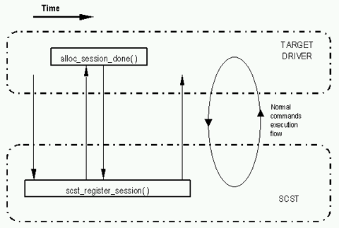
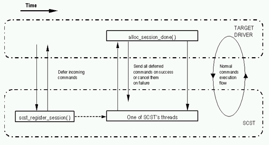
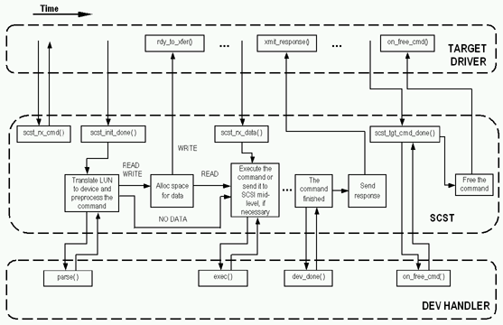

Generic SCSI Target Middle Level for Linux
Vladislav Bolkhovitin
Version 0.9.3-pre4 2006/02/07, actual for SCST 0.9.3-pre4 and later
This document describes SCSI target mid-level for Linux (SCST), its architecture and drivers from the driver writer's point of view.
1. Introduction
SCST is a SCSI target mid-level subsystem for Linux. It is designed to provide unified, consistent interface
between SCSI target drivers and Linux kernel and simplify target drivers development as much as possible.
It has the following features:
- Very low overhead, fine-grained locks and simplest commands processing path, which allow to reach maximum possible performance and scalability that close to theoretical limit.
- Incoming requests can be processed in the caller's context or in one of the internal SCST's tasklets, therefore no extra context switches required.
- Complete SMP support.
- Undertakes most problems, related to execution contexts, thus practically eliminating one of the most complicated problem in the kernel drivers development. For example, a target driver for QLogic 22xx/23xx cards, which has all necessary features, is about 2000 lines of code long, that is at least in several times less, than the initiator one.
- Performs all required pre- and post- processing of incoming requests and all necessary error recovery functionality.
- Emulates necessary functionality of SCSI host adapter, because from a remote initiator's point of view
SCST acts as a SCSI host with its own devices.
Some of the emulated functions are the following:- Generation of necessary UNIT ATTENTIONs, their storage and delivery to all connected remote initiators (sessions).
- RESERVE/RELEASE functionality.
- CA/ACA conditions.
- All types of RESETs and other task management functions.
- REPORT LUNS command as well as SCSI address space management in order to have consistent address space on all remote initiators, since local SCSI devices could not know about each other to report via REPORT LUNS command. Additionally, SCST responds with error on all commands to non-existing devices and provides access control (not implemented yet), so different remote initiators could see different set of devices.
- Other necessary functionality (task attributes, etc.) as specified in SAM-2, SPC-2, SAM-3, SPC-3 and other SCSI standards.
- Device handlers architecture provides extra reliability and security via verifying all incoming requests and allows to make any additional requests processing, which is completely independent from target drivers, for example, data caching or device dependent exceptional conditions treatment.
Interoperability between SCST and local SCSI initiators (like sd, st) is the additional issue that SCST is going to address (it is not implemented yet). It is necessary, because local SCSI initiators can change the state of the device, for example RESERVE the device, or some of its parameters and that would be done behind SCST, which could lead to various problems. Thus, RESERVE/RELEASE commands, locally generated UNIT ATTENTIONs, etc. should be intercepted and processed as if local SCSI initiators act as remote SCSI initiators connected to SCST. This feature requires some the kernel modification. Since in the current version it is not implemented, SCST and the target drivers are able to work with any unpatched 2.4 kernel version.
Interface between SCST and the target drivers is based on work, done by University of New Hampshire Interoperability Labs (UNH IOL).
All described below data structures and function could be found in scsi_tgt.h.
The SCST's Internet page is http://scst.sourceforge.net.
2. Terms and Definitions
SCSI initiator device
A SCSI device that originates service and task management requests to be processed by a SCSI target device and
receives device service and task management responses from SCSI target devices.
SCSI target device
A SCSI device that receives device service and task management requests for processing and sends device service
and task management responses to SCSI initiator devices or drivers.
SCST session
SCST session is the object that describes relationship between a remote initiator and SCST via a target driver.
All the commands from the remote initiator is passed to SCST in the session. For example, for connection oriented
protocols, like iSCSI, SCST session could be mapped to the TCP connection. SCST session is the close equivalent of
I_T nexus object.
Local SCSI initiator
A SCSI initiator that is located on the same host as SCST subsystem. Examples are sg and st drivers.
Remote SCSI initiator
A SCSI initiator that is located on the remote host for SCST subsystem and makes client connections to SCST via
SCSI target drivers.
Device handler driver
Also known as "device type specific driver" or "dev handler", is plugin for SCST, which helps SCST
to analyze incoming requests and determine parameters, specific to various types of devices as well as perform
some processing. See appropriate section for details.
3. SCST Architecture
SCST accepts commands and passes them to SCSI mid-level at the same way as SCSI high-level drivers (sg, sd, st)
do. Figure 1 shows interaction between SCST, its drivers and Linux SCSI subsystem.

Interaction between SCST, its drivers and Linux SCSI subsystem.
4. Target driver registration
To work with SCST a target driver must register its template in SCST by calling scst_register_target_template(). The template lets SCST know the target driver's entry points. It is defined as the following:
4.1 Structure scst_tgt_template
struct scst_tgt_template
Where:
{
int sg_tablesize;
const char name[15];
unsigned unchecked_isa_dma:1;
unsigned use_clustering:1;
unsigned xmit_response_atomic:1;
unsigned rdy_to_xfer_atomic:1;
unsigned report_aen_atomic:1;
int (* detect) (struct scst_tgt_template *tgt_template);
int (* release)(struct scst_tgt *tgt);
int (* xmit_response)(struct scst_cmd *cmd);
int (* rdy_to_xfer)(struct scst_cmd *cmd);
void (*on_free_cmd) (struct scst_cmd *cmd);
void (* task_mgmt_fn_done)(struct scst_mgmt_cmd *mgmt_cmd);
void (* report_aen)(int mgmt_fn, const uint8_t *lun, int lun_len);
int (*proc_info) (char *buffer, char **start, off_t offset,
int length, int *eof, struct scst_tgt *tgt, int inout);
}
- sg_tablesize - allows checking whether scatter/gather can be used or not and, if yes, sets the maximum supported count of scatter/gather entries
- name - the name of the template. Must be unique to identify the template. Must be defined.
- unchecked_isa_dma - true, if this target adapter uses unchecked DMA onto an ISA bus.
- use_clustering - true, if this target adapter wants to use clustering (i.e. smaller number of segments).
- xmit_response_atomic, rdy_to_xfer_atomic - true, if the corresponding function supports execution in the atomic (non-sleeping) context.
- int (* detect) (struct scst_tgt_template *tgt_template) - this function is intended to detect the target adapters that are present in the system. Each found adapter should be registered by calling scst_register(). The function should return a value >= 0 to signify the number of detected target adapters. A negative value should be returned whenever there is an error. Must be defined.
- int (* release)(struct scst_tgt *tgt) - this function is intended to free up the resources allocated to the device. The function should return 0 to indicate successful release or a negative value if there are some issues with the release. In the current version of SCST the return value is ignored. Must be defined.
- int (* xmit_response)(struct scst_cmd *cmd) - this function is equivalent to the SCSI queuecommand(). The target should transmit the response data and the status in the struct scst_cmd. See below for details. Must be defined.
- int (* rdy_to_xfer)(struct scst_cmd *cmd) - this function informs the driver that data buffer corresponding to the said command have now been allocated and it is OK to receive data for this command. This function is necessary because a SCSI target does not have any control over the commands it receives. Most lower-level protocols have a corresponding function which informs the initiator that buffers have been allocated e.g., XFER_RDY in Fibre Channel. After the data is actually received the low-level driver should call scst_rx_data() in order to continue processing this command. Returns one of the SCST_TGT_RES_* constants, described below. Pay attention to "atomic" attribute of the command, which can be get via scst_cmd_atomic(): it is true if the function called in the atomic (non-sleeping) context. Must be defined.
- void (*on_free_cmd)(struct scst_cmd *cmd) - this function called to notify the driver that the command is about to be freed. Necessary, because for aborted commands xmit_response() could not be called. Could be used on IRQ context. Must be defined.
- void (* task_mgmt_fn_done)(struct scst_mgmt_cmd *mgmt_cmd) - this function informs the driver that a received task management function has been completed. Completion status could be get via scst_mgmt_cmd_get_status(). No return value expected. Must be defined, if the target supports task management functionality.
- int (* report_aen)(int mgmt_fn, const uint8_t *lun, int lun_len) - this function is used for Asynchronous Event Notification. It is the responsibility of the driver to notify any/all initiators about the Asynchronous Event reported. Returns one of the SCST_TGT_RES_* constants, described below. Must be defined, if low-level protocol supports AEN. This feature is not implemented yet.
- int (*proc_info) (char *buffer, char **start, off_t offset, int length, int *eof, struct scst_tgt *tgt, int inout)
statistics and other information to the world outside the kernel.
Parameters:- buffer, start, offset, length, eof - have the same meaning as for read_proc_t function of the kernel
- tgt - pointer to the target, for which the function is called
- inout - read/write direction flag, 0 - for reads, other value - for writes
Functions xmit_response(), rdy_to_xfer() are expected to be non-blocking, i.e. return immediately and don't wait for actual data transfer to finish. Blocking in such command could negatively impact on overall system performance. If blocking is necessary, it is worth to consider creating dedicated thread(s) in target driver, to which the commands would be passed and which would perform blocking operations instead of SCST. If the function allowed to sleep or not is defined by "atomic" attribute of the cmd that can be get via scst_cmd_atomic(), which is true, if sleeping is not allowed. In this case, if the function requires sleeping, it can return SCST_TGT_RES_NEED_THREAD_CTX in order to be recalled in the thread context, where sleeping is allowed.
Functions xmit_response(), rdy_to_xfer() and report_aen() can return the following error codes:
- SCST_TGT_RES_SUCCESS - success.
- SCST_TGT_RES_QUEUE_FULL - internal device queue is full, retry again later.
- SCST_TGT_RES_NEED_THREAD_CTX - it is impossible to complete requested task in atomic context. The command should be restarted in the thread context as described above.
- SCST_TGT_RES_FATAL_ERROR - fatal error, i.e. it is unable to perform requested operation. If returned by xmit_response() the command will be destroyed, if by rdy_to_xfer(), xmit_response() will be called with HARDWARE ERROR sense data.
More about xmit_response()
As already written above, function xmit_response() should transmit the response data and the
status from the cmd parameter. Either it should transmit the data or the status is defined by bits of the value,
returned by scst_cmd_get_tgt_resp_flags().
They are:
- SCST_TSC_FLAG_DATA - set if there are data to be sent
- SCST_TSC_FLAG_STATUS - set if the command is finished and there is status/sense to be sent
If SCST_TSC_FLAG_DATA is set, the data contained in the buffer, returned by scst_cmd_get_buffer() (pay attention to scst_cmd_get_use_sg() for scatter/gather) with length, returned by scst_cmd_get_resp_data_len(). It is recommended to use scst_get_buf_*()scst_put_buf()/ family of function instead of direct access to the data buffers, because they hide all HIGHMEM and SG/plain buffer issues.
If SCST_TSC_FLAG_STATUS is set the status could be received by the appropriate scst_cmd_get_*_status() functions (see below).
The sense, if any, is contained in the buffer, returned by scst_cmd_get_sense_buffer(), with length, returned by scst_cmd_get_sense_buffer_len(). SCST always works in autosense mode. If a low-level SCSI driver/device doesn't support autosense mode, SCST will issue REQUEST SENSE command, if necessary. Thus, if CHECK CONDITION established, target driver will always see sense in the sense buffer and isn't required to request the sense manually.
It is possible, that SCST_TSC_FLAG_DATA is set, but SCST_TSC_FLAG_STATUS is
not set. In this case the driver should only transmit the data, but not finish the command and transmit the status.
Function xmit_response() will be called again either to transmit the status or data once more.
After the response is completely sent, the target should call scst_tgt_cmd_done() function in order to allow SCST to free the command.
Function xmit_response() returns one of the SCST_TGT_RES_* constants, described above. Pay attention to "atomic" attribute of the cmd, which can be get via scst_cmd_atomic(): it is true if the function called in the atomic (non-sleeping) context.
4.2 Target driver registration functions
scst_register_target_template()
Function scst_register_target_template() is
defined as the following:
int scst_register_target_template(
struct scst_tgt_template *vtt)
Where:
- vtt - pointer to the target driver template
Returns 0 on success or appropriate error code otherwise.
scst_register()
Function scst_register() is defined as the following:
struct scst_tgt *scst_register(
struct scst_tgt_template *vtt)
Where:
- vtt - pointer to the target driver template
Returns target structure based on template vtt or NULL in case of error.
5. Target driver unregistration
In order to unregister itself target driver should at first call scst_unregister() for all its adapters and then call scst_unregister_target_template() for its template.
5.1 scst_unregister()
Function scst_unregister() is defined as the following:
void scst_unregister(
struct scst_tgt *tgt)
Where:
- tgt - pointer to the target driver structure
5.2 scst_unregister_target_template()
Function scst_unregister_target_template() is defined as the following:
void scst_unregister_target_template(
struct scst_tgt_template *vtt)
Where:
- vtt - pointer to the target driver template
6. SCST session registration
When target driver determines that it needs to create new SCST session (for example, by receiving new TCP connection), it should call scst_register_session(), that is defined as the following:
struct scst_session *scst_register_session(
struct scst_tgt *tgt,
int atomic,
const char *initiator_name,
void *data,
void (*result_fn) (
struct scst_session *sess,
void *data,
int result));
Where:
- tgt - target
- atomic - true, if the function called in the atomic context
- initiator_name - remote initiator's name, any NULL-terminated string, e.g. iSCSI name, which used as the key to found appropriate access control group. Could be NULL, then "default" group is used. The groups are set up via /proc interface.
- data - data that will be used as the second parameter for bfresult_fn/()/ function
- result_fn - pointer to the function that will be asynchronously called when session
initialization finishes. Can be NULL. Parameters:
- sess - session
- data - target driver supplied to scst_register_session() data
- result - session initialization result, 0 on success or appropriate error code otherwise
A session creation and initialization is a complex task, which requires sleeping state, so it can't be fully
done in interrupt context. Therefore the "bottom half" of it, if scst_register_session() is
called from atomic context, will be done in SCST thread context. In this case scst_register_session()
will return not completely initialized session, but the target driver can supply commands to this session via
scst_rx_cmd(). Those commands processing will be delayed inside SCST until the session
initialization is finished, then their processing will be restarted. The target driver will be notified about
finish of the session initialization by function result_fn(). On success the target driver could
do nothing, but if the initialization fails, the target driver must ensure that no more new commands being sent or
will be sent to SCST after result_fn() returns.
All already sent to SCST commands for failed
session will be returned in xmit_response() with BUSY status. In case of failure the driver
shall call scst_unregister_session() inside result_fn(), it will NOT be called
automatically. Thus, scst_register_session() can be called even on IRQ context.
Session registration is illustrated on Figure 2 and Figure 3.

Session registration when atomic parameter is false

Session registration when atomic parameter is true
7. SCST session unregistration
SCST session unregistration basically is the same, except that instead of atomic parameter there is wait one.
void scst_unregister_session(
struct scst_session *sess,
int wait,
void (* unreg_done_fn)(
struct scst_session *sess))
Where:
- sess - session to be unregistered
- wait - if true, instructs to wait until all commands, which currently executing and belonged to the session, finished. Otherwise, target driver should be prepared to receive xmit_response() for the session after scst_unregister_session() returns.
- unreg_done_fn - pointer to the function that will be asynchronously called when the last session's command finishes and the session is about to be completely freed. Can be NULL. Parameter:
- sess - session
All outstanding commands will be finished regularly. After scst_unregister_session() returned no new commands must be sent to SCST via scst_rx_cmd(). Also, the caller must ensure that no scst_rx_cmd() or scst_rx_mgmt_fn_*() is called in paralell with scst_unregister_session().
Function scst_unregister_session() can be called before result_fn() of scst_register_session() called, i.e. during the session registration/initialization.
8. The commands processing and interaction between SCST and its drivers
The commands processing by SCST started when target driver calls scst_rx_cmd(). This function
returns SCST's command. Then the target driver finishes the command's initialization, if necessary, for example,
storing necessary target driver specific data there, and calls scst_cmd_init_done() telling SCST
that it can start the processing. Then SCST translates the command's LUN to local device, determines the command's
data direction and required data buffer size by calling appropriate device handler's parse()
function.
Then:
- If the command required no data transfer, it will be passed to SCSI mid-level directly or via device handler's exec() call.
- If the command is READ command (data to the target), necessary space will be allocated and then the command will be passed to SCSI mid-level directly or via device handler's exec() call.
- If the command is WRITE command (data from the target), necessary space will be allocated, then the target's rdy_to_xfer() function will be called, telling the target that the space is ready and it can start data transferring. When all the data are read from the target, it will call scst_rx_data(), and the command will be passed to SCSI mid-level directly or via device handler's exec() call.
When the command is finished by SCSI mid-level, device handler's dev_done() is called to notify it about the command's completion. Then in order to send the response the target's xmit_response() is called. When the response, including data, if any, is transmitted, the target will call scst_tgt_cmd_done() telling SCST that it can free the command and its data buffer.
Then during the command's deallocation device handler's and the target's on_free_cmd() will be called in this order, if set.
This sequence is illustrated on Figure 4. To simplify the picture, sign "..." means SCST's waiting state for the corresponding command to complete. During this state SCST and its drivers continue processing of other commands, if there are any. One way arrow, for example to xmit_response(), means that after this function returns, nothing valuable for the current command will be done and SCST goes sleeping or to the next command processing until corresponding event happens.

The commands processing flow
Additionally, before calling scst_cmd_init_done() the target driver can set the following the command's flags or parameters:
- DATA_BUF_ALLOCED - set if the data buffer is already allocated. The flag is set via scst_cmd_set_data_buff_alloced() and get via scst_cmd_get_data_buff_alloced(). Useful, for instance, for iSCSI unsolicited data.
- Expected transfer length and direction via scst_cmd_set_expected() as supplied by remote initiator, if any. This values will be used only if the command's opcode is unknown for SCST, for example for vendor-specific commands. If these values not set and opcode isn't known, the command will be completed by SCST in preprocessing phase with INVALID OPCODE sense.
8.1 The commands processing functions
scst_rx_cmd()
Function scst_rx_cmd() creates and sends new command to SCST. Returns the command on success or NULL otherwise. It is defined as the following:
struct scst_cmd *scst_rx_cmd(
struct scst_session *sess,
const uint8_t *lun,
int lun_len,
const uint8_t *cdb,
int cdb_len,
int atomic)
Where:
- sess - SCST's session
- lun - pointer to device's LUN as specified in SCSI Architecture Model 2/3 without any byte order translation. Extended addressing method is not supported.
- lun_len - LUN's length
- cdb - SCSI CDB
- cdb_len - CDB's length
- atomic - if true, the command will be allocated with GFP_ATOMIC flag, otherwise GFP_KERNEL will be used
scst_cmd_init_done()
Function scst_cmd_init_done() notifies SCST that the driver finished its part of the command initialization, and the command is ready for execution. It is defined as the following:
void scst_cmd_init_done(
struct scst_cmd *cmd,
int pref_context)
Where:
- cmd - the command
- pref_context - preferred command execution context. See SCST_CONTEXT_* constants below for details.
scst_rx_data()
Function scst_rx_data() notifies SCST that the driver received all the necessary data and the command is ready for further processing. It is defined as the following:
void scst_rx_data(
struct scst_cmd *cmd,
int status,
int pref_context)
Where:
- cmd - the command
- status - completion status, see below.
- pref_context - preferred command execution context. See SCST_CONTEXT_* constants below for details.
Parameter status can have one of the following values:
- SCST_RX_STATUS_SUCCESS - success
- SCST_RX_STATUS_ERROR - data receiving finished with error, so SCST should set the sense and finish the command by calling xmit_response()
- SCST_RX_STATUS_ERROR_SENSE_SET - data receiving finished with error and the sense is set, so SCST should finish the command by calling xmit_response()
- SCST_RX_STATUS_ERROR_FATAL - data receiving finished with fatal error, so SCST should finish the command, but don't call xmit_response(). In this case the driver must free all associated with the command data before calling scst_rx_data().
scst_tgt_cmd_done()
Function scst_tgt_cmd_done() notifies SCST that the driver sent the data and/or response. It must not been called if there are an error and xmit_response() returned something other, than SCST_TGT_RES_SUCCESS. It is defined as the following:
void scst_tgt_cmd_done(
struct scst_cmd *cmd)
Where:
- cmd - the command
8.2 The commands processing context
Execution context often is a major problem in the kernel drivers development, because many contexts, like IRQ one, greatly limit available functionality, therefore require additional complex code in order to pass processing to more simple context. SCST does its best to undertake most of the context handling.
On the initialization time SCST creates for internal command processing as many threads as there are processors in the system or specified by user via scst_threads module parameter. Similarly, as many tasklets created as there are processors in the system.
Each command can be processed in one of four contexts:
- Directly, i.e. in the caller's context, without limitations
- Directly atomically, i.e. with sleeping forbidden
- In the SCST's internal per processor or per session thread
- In the SCST's per processor tasklet
The target driver sets this context as pref_context parameter for scst_cmd_init_done() and scst_rx_data(). Additionally, target's template's xmit_response_atomic and rdy_to_xfer_atomic flags have direct influence on the context. If one of them is false, the corresponding function will never be called in the atomic context and, if necessary, the command will be rescheduled to one of the SCST's threads.
SCST in some circumstances can change preferred context to less restrictive one, for example, for large data buffer allocation, if there is not enough GFP_ATOMIC memory.
Preferred context constants
There are the following preferred context constants:
- SCST_CONTEXT_DIRECT - sets direct command processing (i.e. regular function calls in the current context) sleeping is allowed, no context restrictions. Supposed to be used when calling from thread context where no locks are held and the driver's architecture allows sleeping without performance degradation or anything like that.
- SCST_CONTEXT_DIRECT_ATOMIC - sets direct command processing (i.e. regular function calls in the current context), sleeping is not allowed. Supposed to be used when calling on thread context where there are locks held, when calling on softirq context or the driver's architecture does not allow sleeping without performance degradation or anything like that.
- SCST_CONTEXT_TASKLET - tasklet or thread context required for the command processing. Supposed to be used when calling from IRQ context.
- SCST_CONTEXT_THREAD - thread context required for the command processing. Supposed to be used if the driver's architecture does not allow using any of above.
9. Task management functions
There are the following task management functions supported:
- SCST_ABORT_TASK - ABORT_TASK task management function, aborts the specified task (command). Returns completion status via task_mgmt_fn_done() when the command (task) is actually aborted.
- SCST_ABORT_TASK_SET - ABORT_TASK_SET task management function, aborts all tasks (commands) on the specified device. Returns the success via task_mgmt_fn_done() immediately, not waiting for the commands being actually aborted.
- SCST_CLEAR_ACA - CLEAR_ACA task management function, currently does nothing.
- SCST_CLEAR_TASK_SET - CLEAR_TASK_SET task management function, the same as SCST_ABORT_TASK_SET.
- SCST_LUN_RESET - LUN_RESET task management function, implemented via scsi_reset_provider() call for the specified device with SCSI_TRY_RESET_DEVICE parameter.
- SCST_TARGET_RESET - TARGET_RESET task management function, implemented via scsi_reset_provider() call for all the hosts in the system (one device per each host) with SCSI_TRY_RESET_BUS parameter at first and then, if failed, with SCSI_TRY_RESET_HOST.
9.1 scst_rx_mgmt_fn_tag()
Function scst_rx_mgmt_fn_tag() tells SCST to perform the specified task management function, based on the command's tag. Can be used only for SCST_ABORT_TASK.
It is defined as the following:
int scst_rx_mgmt_fn_tag(
struct scst_session *sess,
int fn,
uint32_t tag,
int atomic,
void *tgt_specific)
Where:
- sess - the session, on which the command should be performed.
- fn - task management function, one of the constants above.
- tag - the command's tag.
- atomic - true, if the function called in the atomic context.
- tgt_specific - pointer to the target driver specific data, can be retrieved in task_mgmt_fn_done() via scst_mgmt_cmd_get_status() function.
9.2 scst_rx_mgmt_fn_lun()
Function scst_rx_mgmt_fn_lun() tells SCST to perform the specified task management function, based on the LUN. Currently it can be used for any function, except SCST_ABORT_TASK.
It is defined as the following:
int scst_rx_mgmt_fn_lun(
struct scst_session *sess,
int fn,
const uint8_t *lun,
int lun_len,
int atomic,
void *tgt_specific);
Where:
- sess - the session, on which the command should be performed.
- fn - task management function, one of the constants above.
- lun - LUN, the format is the same as for scst_rx_cmd().
- lun_len - LUN's length.
- atomic - true, if the function called in the atomic context.
- tgt_specific - pointer to the target driver specific data, can be retrieved in task_mgmt_fn_done() via scst_mgmt_cmd_get_status() function.
10. Device specific drivers (device handlers)
Device specific drivers are plugins for SCST, which help SCST to analyze incoming requests and determine parameters, specific to various types of devices. Device handlers are intended for the following:
- To get data transfer length and direction directly from CDB and current device's configuration exactly as an end-target SCSI device does. This serves two purposes:
- Improves security and reliability by not trusting the data supplied by remote initiator via SCSI low-level protocol.
- Some low-level SCSI protocols don't provide data transfer length and direction, so that information can be get only directly from CDB and current device's configuration. For example, for tape devices to get data transfer size it might be necessary to know block size setting.
- To process some exceptional conditions, like ILI on tape devices.
- To initialize incoming commands with some device-specific parameters, like timeout value.
- To allow some additional device-specific commands pre-, post- processing or alternative execution, like copying data from system cache, and do that completely independently from target drivers.
Device handlers performs very lightweight processing and therefore should not considerably affect performance or CPU load. They are considered to be part of SCST, so they could directly access any fields in SCST's structures as well as use the corresponding functions.
Without appropriate device handler SCST hides devices of this type from remote initiators and returns
HARDWARE ERROR sense data to any requests to them.
10.1 Device specific driver registration
scst_register_dev_driver()
To work with SCST a device specific driver must register itself in SCST by calling scst_register_dev_driver(). It is defined as the following:
int scst_register_dev_driver(
struct scst_dev_type *dev_type)
Where:
- dev_type - device specific driver's description structure
Structure scst_dev_type
Structure scst_dev_type is defined as the following:
struct scst_dev_type
{
char name[15];
int type;
unsigned parse_atomic:1;
unsigned exec_atomic:1;
unsigned dev_done_atomic:1;
int (*init) (struct scst_dev_type *dev_type);
void (*release) (struct scst_dev_type *dev_type);
int (*attach) (struct scst_device *dev);
void (*detach) (struct scst_device *dev);
int (*attach_tgt) (struct scst_tgt_device *tgt_dev);
void (*detach_tgt) (struct scst_tgt_device *tgt_dev);
int (*parse) (struct scst_cmd *cmd);
int (*exec) (struct scst_cmd *cmd,
void (*scst_cmd_done)(struct scsi_cmnd *cmd, int next_state));
int (*dev_done) (struct scst_cmd *cmd);
int (*task_mgmt_fn) (struct scst_mgmt_cmd *mgmt_cmd,
struct scst_tgt_dev *tgt_dev, struct scst_cmd *cmd_to_abort);
int (*on_free_cmd) (struct scst_cmd *cmd);
int (*proc_info) (char *buffer, char **start, off_t offset,
int length, int *eof, struct scst_dev_type *dev_type,
int inout)
struct module *module;
}
Where:
- name - the name of the device handler. Must be defined and unique
- type - SCSI type of the supported device. Must be defined.
- parse_atomic, exec_atomic, dev_done_atomic - true, if corresponding function supports execution in the atomic (non-sleeping) context
- int (*init) (struct scst_dev_type *dev_type) - called on the device handler load, before the first attach(). Returns 0 on success, error code otherwise.
- void (*release) (struct scst_dev_type *dev_type) - called on the device handler unload, after final detach()
- int (*attach) (struct scst_device *dev) - called when new device is attaching to the device handler
- void (*detach) (struct scst_device *dev) - called when new device is detaching from the device handler
- int (*attach_tgt) (struct scst_tgt_device *tgt_dev) - called when new tgt_device (session) is attaching to the device handler
- void (*detach_tgt) (struct scst_tgt_device *tgt_dev) - called when tgt_device (session) is detaching from the device handler
- int (*parse) (struct scst_cmd *cmd, const struct scst_info_cdb *cdb_info) - called to parse CDB from the command. It should initialize cmd->bufflen and cmd->data_direction (see below SCST_DATA_* constants) if necessary, otherwise defaults based on cdb_info will be used. Parameter cdb_info provides some info about the CDB (see below). Pay attention to "atomic" attribute of the cmd, which can be via by scst_cmd_atomic(): it is true if the function called in the atomic (non-sleeping) context. Returns the command's next state or SCST_CMD_STATE_DEFAULT, if the next default state should be used, or SCST_CMD_STATE_NEED_THREAD_CTX if the function called in atomic context, but requires sleeping. In the last case, the function will be recalled in the thread context, where sleeping is allowed. Additionally, SCST_CMD_DATA_BUF_ALLOCED flag can be set by parse() (see above). Must be defined.
- int (*exec) (struct scst_cmd *cmd, void (*scst_cmd_done)( struct scst_cmd *cmd, int next_state)) - called to execute CDB. The result of the CDB execution is reported via scst_cmd_done() callback. Pay attention to "atomic" attribute of the command, which can be get via scst_cmd_atomic(): it is true if the function called in the atomic (non-sleeping) context. For scst_cmd_done() parameter next_state is the command's next state or SCST_CMD_STATE_DEFAULT, if the next default state should be used. Using this function modules devdisk_perf and devtape_perf were implemented. These modules in their exec() method skip (pretend to execute) all READ and WRITE operations and thus allow direct link performance measurements without overhead of actual data transferring from/to underlying SCSI device. See also scst_is_cmd_local() below. Returns:
- SCST_EXEC_COMPLETED - the command is done, go to other ones
- SCST_EXEC_NEED_THREAD - thread context is required to execute the command. Exec() will be called again in the thread context.
- SCST_EXEC_NOT_COMPLETED - the command should be sent to SCSI mid-level.
- int (*dev_done) (struct scst_cmd *cmd) - called to notify device handler about the result of the command's execution and perform some post processing. If parse() function is called, dev_done() is guaranteed to be called as well. The command's fields tgt_resp_flags and resp_data_len should be set by this function, but SCST offers good defaults. Pay attention to "atomic" attribute of the command, which can be get via scst_cmd_atomic(): it is true if the function called in the atomic (non-sleeping) context. Returns the command's next state or SCST_CMD_STATE_DEFAULT, if the next default state should be used, or SCST_CMD_STATE_NEED_THREAD_CTX if the function called in atomic context, but requires sleeping. In the last case, the function will be recalled in the thread context, where sleeping is allowed.
- int (*task_mgmt_fn) (struct scst_mgmt_cmd *mgmt_cmd, struct scst_tgt_dev *tgt_dev, struct scst_cmd *cmd_to_abort) - called to execute a task management command. Returns:
- SCST_DEV_TM_COMPLETED_SUCCESS - the command is done with success, no firther actions required
- SCST_DEV_TM_COMPLETED_FAILED - the command is failed, no firther actions required
- SCST_DEV_TM_NOT_COMPLETED - regular standard actions for the command should be done
- void (*on_free_cmd) (struct scst_cmd *cmd) - called to notify device handler that the command is about to be freed. Could be called on IRQ context.
- int (*proc_info) (char *buffer, char **start, off_t offset, int length, int *eof, struct scst_dev_type *dev_type, int inout) - this function can be used to export the handler's statistics and other information to the world outside the kernel. Parameters:
- buffer, start, offset, length, eof - have the same meaning as for read_proc_t function of the kernel
- dev_type - pointer to the device handler, for which the function is called
- inout - read/write direction flag, 0 - for reads, other value - for writes
- struct module *module - pointer to device handler's module
Structure scst_info_cdb is defined as the following:
struct scst_info_cdb
{
enum scst_cdb_flags flags;
scst_data_direction direction;
unsigned int transfer_len;
unsigned short cdb_len;
const char *op_name;
}
Where:
- flags - CDB's flags can be (OR'ed):
- SCST_TRANSFER_LEN_TYPE_FIXED - set if data length in CDB set in blocks
- SCST_SMALL_TIMEOUT - set if CDB requires small timeout
- SCST_LONG_TIMEOUT - set if CDB requires long timeout
- direction - one of the SCST_DATA_* constants (see below)
- transfer_len - CDB's data length as set in CDB
- cdb_len - CDB's length
- op_name - the name of the command
Field cmd->data_direction, set by parse(), can have one of the following values:
- SCST_DATA_UNKNOWN - data flow direction is unknown
- SCST_DATA_WRITE - data flow direction is WRITE (from target to initiator)
- SCST_DATA_READ - data flow direction is READ (from initiator to target)
- SCST_DATA_NONE - there is no data transfer
10.2 Device specific driver unregistration
Device specific driver is unregistered by calling scst_unregister_dev_driver(). It is defined as the following:
void scst_unregister_dev_driver(
struct scst_dev_type *dev_type)
Where:
- dev_type - device specific driver's description structure
11. SCST commands' states
There are the following states, which a SCST command passes through during execution and which could be returned by device handler's parse() and dev_done() (but not all states are allowed to be returned):
- SCST_CMD_STATE_INIT_WAIT - the command is created, but scst_cmd_init_done() not called
- SCST_CMD_STATE_INIT - LUN translation (i.e. cmd->tgt_dev assignment) state
- SCST_CMD_STATE_REINIT - again LUN translation, used if device handler wants to restart the command on another LUN
- SCST_CMD_STATE_DEV_PARSE - device handler's parse() is going to be called
- SCST_CMD_STATE_PREPARE_SPACE - allocation of the command's data buffer
- SCST_CMD_STATE_RDY_TO_XFER - target driver's rdy_to_xfer() is going to be called
- SCST_CMD_STATE_DATA_WAIT - waiting for data from the initiator (until scst_rx_data() called)
- SCST_CMD_STATE_SEND_TO_MIDLEV - the command is going to be sent to SCSI mid-level for execution
- SCST_CMD_STATE_EXECUTING - waiting for the command's execution finish
- SCST_CMD_STATE_DEV_DONE - device handler's dev_done() is going to be called
- SCST_CMD_STATE_XMIT_RESP - target driver's xmit_response() is going to be called
- SCST_CMD_STATE_XMIT_WAIT - waiting for data/response's transmission finish (until scst_tgt_cmd_done() called)
- SCST_CMD_STATE_FINISHED - the command finished and going to be freed
12. SCST's structures manipulation functions
Target drivers must not directly access any fields in SCST's structures, they must use only described below functions.
12.1 SCST target driver manipulation functions
scst_tgt_get_tgt_specific() and scst_tgt_set_tgt_specific()
Function scst_tgt_get_tgt_specific() returns pointer to the target driver specific data, set by scst_tgt_set_tgt_specific(). It is defined as the following:
void *scst_tgt_get_tgt_specific(
struct scst_tgt *tgt)
Function scst_tgt_set_tgt_specific() stores the target driver specific data that could be retrieved later by scst_tgt_get_tgt_specific(). It is defined as the following:
void scst_tgt_set_tgt_specific(
struct scst_tgt *tgt,
void *val)
Where:
- tgt - pointer to the SCST target structure
- val - pointer to the target driver specific data
12.2 SCST session manipulation functions
scst_sess_get_tgt_specific() and scst_sess_set_tgt_specific()
Function scst_sess_get_tgt_specific() returns pointer to the target driver specific data, set by scst_sess_set_tgt_specific(). It is defined as the following:
void *scst_sess_get_tgt_specific(
struct scst_session *sess)
Function scst_sess_set_tgt_specific() stores the target driver specific data that could be retrieved later by scst_sess_set_tgt_specific(). It is defined as the following:
void scst_sess_set_tgt_specific(
struct scst_session *sess,
void *val)
Where:
- sess - pointer to the SCST session structure
- val - pointer to the target driver specific data
12.3 SCST command manipulation functions
scst_cmd_atomic()
Function scst_cmd_atomic() returns true if the command is being executed in the atomic context or false otherwise. It is defined as the following:
int scst_cmd_atomic(
struct scst_cmd *cmd)
Where:
- cmd - pointer to the command
scst_cmd_get_session()
Function scst_cmd_get_session() returns the command's session. It is defined as the following:
struct scst_session *scst_cmd_get_session(
struct scst_cmd *cmd)
Where:
- cmd - pointer to the command
scst_cmd_get_resp_data_len()
Function scst_cmd_get_resp_data_len() returns the command's response data length. It is defined as the following:
unsigned int scst_cmd_get_resp_data_len(
struct scst_cmd *cmd)
Where:
- cmd - pointer to the command
scst_cmd_get_tgt_resp_flags()
Function scst_cmd_get_tgt_resp_flags() returns the command's response data response flags (SCST_TSC_FLAG_* constants). It is defined as the following:
int scst_cmd_get_tgt_resp_flags(
struct scst_cmd *cmd)
Where:
- cmd - pointer to the command
scst_cmd_get_buffer()
Function scst_cmd_get_buffer() returns the command's data buffer. It is defined as the following:
void *scst_cmd_get_buffer(
struct scst_cmd *cmd)
Where:
- cmd - pointer to the command
It is recommended to use scst_get_buf_*()scst_put_buf()/ family of function instead of direct access to the data buffers, because they hide all HIGHMEM and SG/plain buffer issues.
scst_cmd_get_bufflen()
Function scst_cmd_get_bufflen() returns the command's data buffer length. It is defined as the following:
unsigned int scst_cmd_get_bufflen(
struct scst_cmd *cmd)
Where:
- cmd - pointer to the command
It is recommended to use scst_get_buf_*()scst_put_buf()/ family of function instead of direct access to the data buffers, because they hide all HIGHMEM and SG/plain buffer issues.
scst_cmd_get_use_sg()
Function scst_cmd_get_use_sg() returns the command's use_sg value. Its meaning is the same as for scsi_cmnd. The function is defined as the following:
unsigned short scst_cmd_get_use_sg(
struct scst_cmd *cmd)
Where:
- cmd - pointer to the command
It is recommended to use scst_get_buf_*()scst_put_buf()/ family of function instead of direct access to the data buffers, because they hide all HIGHMEM and SG/plain buffer issues.
scst_cmd_get_data_direction()
Function scst_cmd_get_data_direction() returns the command's data direction (SCST_DATA_* constants). It is defined as the following:
scst_data_direction scst_cmd_get_data_direction(
struct scst_cmd *cmd)
Where:
- cmd - pointer to the command
scst_cmd_get_status()
Functions scst_cmd_get_status() returns the status byte from host device. It is defined as the following:
uint8_t scst_cmd_get_status(
struct scst_cmd *cmd)
Where:
- cmd - pointer to the command
scst_cmd_get_masked_status()
Functions scst_cmd_get_masked_status() returns the status byte set from host device by status_byte(). It is defined as the following:
uint8_t scst_cmd_get_masked_status(
struct scst_cmd *cmd)
Where:
- cmd - pointer to the command
scst_cmd_get_msg_status()
Functions scst_cmd_get_msg_status() returns the status from host adapter itself. It is defined as the following:
uint8_t scst_cmd_get_msg_status(
struct scst_cmd *cmd)
Where:
- cmd - pointer to the command
scst_cmd_get_host_status()
Functions scst_cmd_get_host_status() returns the status set by low-level driver to indicate its status. It is defined as the following:
uint16_t scst_cmd_get_host_status(
struct scst_cmd *cmd)
Where:
- cmd - pointer to the command
scst_cmd_get_driver_status()
Functions scst_cmd_get_driver_status() returns the status set by SCSI mid-level. It is defined as the following:
uint16_t scst_cmd_get_driver_status(
struct scst_cmd *cmd)
Where:
- cmd - pointer to the command
scst_cmd_get_sense_buffer()
Functions scst_cmd_get_sense_buffer() returns pointer to the sense buffer. It is defined as the following:
uint8_t *scst_cmd_get_sense_buffer(
struct scst_cmd *cmd)
Where:
- cmd - pointer to the command
scst_cmd_get_sense_buffer_len()
Functions scst_cmd_get_sense_buffer_len() returns the sense buffer length. It is defined as the following:
int scst_cmd_get_sense_buffer_len(
struct scst_cmd *cmd)
Where:
- cmd - pointer to the command
scst_cmd_get_tag() and scst_cmd_set_tag()
Function scst_cmd_get_tag() returns the command's tag, set by scst_cmd_set_tag() . It is defined as the following:
uint32_t scst_cmd_get_tag(
struct scst_cmd *cmd)
Function scst_cmd_set_tag() sets command's tag that could be retrieved later by scst_cmd_get_tag(). It is defined as the following:
void scst_cmd_set_tag(
struct scst_cmd *cmd,
uint32_t tag)
Where:
- cmd - pointer to the command
- tag - the tag
scst_cmd_get_tgt_specific() and scst_cmd_get_tgt_specific_lock()
Functions scst_cmd_get_tgt_specific() and scst_cmd_get_tgt_specific_lock() return pointer to the target driver specific data, set by scst_cmd_set_tgt_specific() or scst_cmd_set_tgt_specific_lock(). Both function are basically the same, but the later one additionally takes lock, which helps to prevent some races. See scst_find_cmd() below for details.
They are defined as the following:
void *scst_cmd_get_tgt_specific(
struct scst_cmd *cmd)
void *scst_cmd_get_tgt_specific_lock(
struct scst_cmd *cmd)
Where:
- cmd - pointer to the command
scst_cmd_set_tgt_specific() and scst_cmd_set_tgt_specific_lock()
Functions scst_cmd_set_tgt_specific() and scst_cmd_set_tgt_specific_lock() store the target driver specific data, that could be retrieved later by scst_cmd_get_tgt_specific() or scst_cmd_get_tgt_specific_lock(). Both function are basically the same, but the later one additionally takes lock, which helps to prevent some races. See scst_find_cmd() below for details.
They are defined as the following:
void *scst_cmd_set_tgt_specific(
struct scst_cmd *cmd,
void *val)
void *scst_cmd_set_tgt_specific_lock(
struct scst_cmd *cmd,
void *val)
Where:
- cmd - pointer to the command
- val - pointer to the target driver specific data
scst_cmd_get_data_buff_alloced() and scst_cmd_set_data_buff_alloced()
Function scst_cmd_get_data_buff_alloced() returns the state of the SCST_CMD_DATA_BUF_ALLOCED flag. It is defined as the following:
int scst_cmd_get_data_buff_alloced(
struct scst_cmd *cmd)
Function scst_cmd_set_data_buff_alloced() tells SCST that the data buffer is alloced by target driver or device handler by setting the SCST_CMD_DATA_BUF_ALLOCED flag on. Could be useful, for instance, for iSCSI unsolicited data. It is defined as the following:
void scst_cmd_set_data_buff_alloced(
struct scst_cmd *cmd)
Where:
- cmd - pointer to the command
scst_cmd_set_expected(), scst_cmd_is_expected_set(),scst_cmd_get_expected_data_direction() and scst_cmd_get_expected_transfer_len()
Function scst_cmd_set_expected() tells SCST expected data transfer direction and its length, as supplied by remote initiator. It is defined as the following:
void scst_cmd_set_expected(
struct scst_cmd *cmd,
scst_data_direction expected_data_direction,
unsigned int expected_transfer_len)
Function scst_cmd_is_expected_set() returns true, if the expected values were set by target driver and false otherwise. It is defined as the following:
int scst_cmd_is_expected_set(
struct scst_cmd *cmd)
Function scst_cmd_get_expected_data_direction() returns expected data direction set by target driver, if any. If this value was not set, the return value is undefined. It is defined as the following:
scst_data_direction scst_cmd_get_expected_data_direction(
struct scst_cmd *cmd)
Function scst_cmd_get_expected_transfer_len() returns expected transfer length set by target driver, if any. If this value was not set, the return value is undefined. It is defined as the following:
unsigned int scst_cmd_get_expected_transfer_len(
struct scst_cmd *cmd)
Where:
- cmd - pointer to the command
- expected_data_direction - expected data direction
- expected_transfer_len - expected transfer length
scst_get_buf_first(), scst_get_buf_next(),scst_put_buf() and scst_get_buf_count()
These functions are designed to simplify and unify access to the commands data (SG vector or plain data buffer) in all possible conditions, including HIGHMEM environment, and should be used instead of direct access.
Function scst_get_buf_first() starts access to the data. It is defined as the following:
int scst_get_buf_first(
struct scst_cmd *cmd,
uint8_t **buf)
Where:
- cmd - pointer to the command
- buf - pointer, where pointer to the first data chunk will be put
Returns the length of the chunk of data for success, 0 for the end of data, negative error code otherwise.
Function scst_get_buf_next() continues access to the data. It is defined as the following:
int scst_get_buf_next(
struct scst_cmd *cmd,
uint8_t **buf)
Where:
- cmd - pointer to the command
- buf - pointer, where pointer to the next data chunk will be put
Returns the length of the chunk of data for success, 0 for the end of data, negative error code otherwise.
Function scst_put_buf() tells SCST that the user of the chunk of data, returned by scst_get_buf_first() or scst_get_buf_next(), finished accessing the data. This function must be called for all chunks of data, returned by scst_get_buf_first() or scst_get_buf_next(). It is defined as the following:
void scst_put_buf(
struct scst_cmd *cmd,
uint8_t *buf)
Where:
- cmd - pointer to the command
- buf - pointer to the data chunk
Function scst_get_buf_count() returns the approximate higher rounded count of data chunks that scst_get_buf_[first|next]() will return. It is defined as the following:
int scst_get_buf_count(
struct scst_cmd *cmd)
Where:
- cmd - pointer to the command
12.4 SCST task management commands manipulation functions
scst_mgmt_cmd_get_tgt_specific()
Function scst_mgmt_cmd_get_tgt_specific() returns pointer to the target driver specific data, set on call of scst_rx_mgmt_fn_tag() or scst_rx_mgmt_fn_lun(). It is defined as the following:
void *scst_mgmt_cmd_get_tgt_specific(
struct scst_mgmt_cmd *mcmd)
Where:
- mcmd - pointer to the task management command
scst_mgmt_cmd_get_status()
Functions scst_mgmt_cmd_get_status() returns task management command's completion status. It is defined as the following:
void *scst_mgmt_cmd_get_status(
struct scst_mgmt_cmd *mcmd)
Where:
- mcmd - pointer to the task management command
The following status values are possible:
- SCST_MGMT_STATUS_SUCCESS - the task management command completed successfully
- SCST_MGMT_STATUS_FAILED - the task management command failed.
13. Miscellaneous functions
13.1 scst_find_cmd_by_tag()
Function scst_find_cmd_by_tag() is designed to find SCST's command based on the supplied tag comparing it with one that previously set by scst_cmd_set_tag(). This value should be set by the target driver on the command's initialization time.
It is defined as the following:
struct scst_cmd *scst_find_cmd_by_tag(
struct scst_session *sess,
uint32_t tag)
Where:
- sess - session to which the command belongs
- tag - the tag
Returns found command or NULL otherwise.
13.2 scst_find_cmd()
Function scst_find_cmd() is designed to find SCST's command. For example, it can be used to find the command by internal serial number that was supplied by a remote target's response.
It is defined as the following:
struct scst_cmd *scst_find_cmd(
struct scst_session *sess,
void *data,
int (*cmp_fn)(struct scst_cmd *cmd, void *data))
Where:
- sess - session to which the command belongs
- data - comparison data that will be passed to cmp_fn() as is
- cmp_fn - comparison callback function that will be called for each the session's command. Should return true if the command is found, false otherwise. Parameters:
- cmd - the command to compare
- data - comparison data.
Returns found command or NULL otherwise.
IMPORTANT
SCST is designed in a such way that any command is always processed only by one thread at any time, so no locking is necessary. But there is one exception from that rule, it is scst_find_cmd() function. Since it calls the callback over all commands of the session in the internal lists, despite of the command's current state, there is a race possibility accessing to target specific data pointer between scst_cmd_set_tgt_specific() caller and cmp_fn(), which usually calls scst_cmd_get_tgt_specific() from the different context. The only place, where it is safe to call scst_cmd_set_tgt_specific() without the race probability, is between scst_rx_cmd() and scst_cmd_init_done(). Thus, if you call scst_cmd_set_tgt_specific() only there, there is nothing to worry, always use the functions without "lock" suffix. Otherwise, be careful and, if necessary, use "lock" functions. In addition, cmp_fn() is allowed to use only target specific data and forbidden to call any SCST's functions.
13.3 scst_get_cdb_info()
Function scst_get_cdb_info() provides various CDB info. It is defined as the following:
int scst_get_cdb_info(
const uint8_t *cdb_p,
int dev_type,
struct scst_info_cdb *info_p)
Where:
- cdb_p - pointer to CDB
- dev_type - SCSI device type
- info_p - the result structure, see description in device handler's parse() chapter
Returns 0 on success, -1 otherwise.
13.4 scst_to_dma_dir()
Function scst_to_dma_dir() translates SCST's data direction to DMA one. It is defined as the following:
int scst_to_dma_dir(
int scst_dir)
Where:
- scst_dir - one of the SCST_DATA_* constants
Returns the corresponding PCI_DMA_* constant.
13.5 scst_is_cmd_local()
Function scst_is_cmd_local() checks if the command is handled by SCST (i.e. locally, as, e.g., REPORT LUNS command). Intended to be used in device handler's exec(), when the device handler wants to perform all the commands, except ones that should be done by SCST itself.
It is defined as the following:
int scst_is_cmd_local(
struct scst_cmd *cmd)
Where:
- cmd - the command, which CDB should be checked
Returns 1, if the command's CDB is locally handled by SCST or 0 otherwise
13.6 scst_register_virtual_device() and scst_unregister_virtual_device()
These functions provide a way for device handlers to register a virtual (emulated) device, which will be visible only by remote initiators. For example, FILEIO device handler uses files on file system to makes from them virtual remotely available SCSI disks.
Function scst_register_virtual_device() registers a virtual device. During the registration the device handlers functions init() and attach() will be called, if defined. The function is defined as the following:
int scst_register_virtual_device(
struct scst_dev_type *dev_handler)
Where:
- dev_handler - device handler's descriptor
Returns assigned to the device ID on success, or negative value otherwise.
Function scst_unregister_virtual_device() unregisters a virtual device. During the unregistration the device handlers functions detach() and release() will be called, if defined. The function is defined as the following:
void scst_unregister_virtual_device(
int id)
Where:
- id - the device's ID, returned by scst_register_virtual_device()
13.7 scst_add_threads() and scst_del_threads()
These functions allows to add or delete some SCST threads. For example, if exec() function in your device handler works synchronously, i.e. wait for job's completition, in order to prevent performance loss you can add for SCST as many threads as there are devices serviced by your device handler.
Function scst_add_threads() starts requested number of threads. It is defined as the following:
int scst_add_threads(
int num)
Where:
- num - number of the threads to start
Returns 0 on success, error code otherwise.
Function scst_del_threads() stops requested number of threads. It is defined as the following:
void scst_del_threads(
int num)
Where:
- num - number of the threads to stop
13.8 scst_proc_get_tgt_root()
Function scst_proc_get_tgt_root() returns target driver's root entry in SCST's /proc hierarchy. The driver can create own files/directories here, which should be deleted in the driver's release(). It is defined as the following:
struct proc_dir_entry *scst_proc_get_tgt_root(
struct scst_tgt_template *vtt)
Where:
- vtt - pointer to the driver's template
Returns proc_dir_entry on success, NULL otherwise.
13.9 scst_proc_get_dev_type_root()
Function scst_proc_get_dev_type_root() returns device handler's root entry in SCST's /proc hierarchy. The driver can create own files/directories here, which should be deleted in the driver's detach() or release(). It is defined as the following:
struct proc_dir_entry *scst_proc_get_dev_type_root(
struct scst_dev_type *dtt)
Where:
- dtt - pointer to the handler's description structure
Returns proc_dir_entry on success, NULL otherwise.